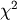
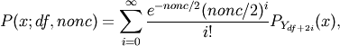
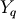
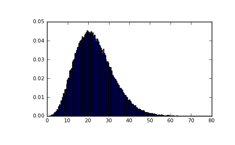
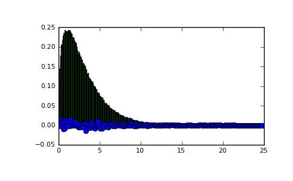
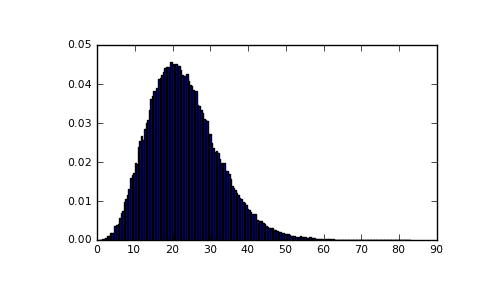

numpy.random.mtrand.RandomState.noncentral_chisquare¶
- RandomState.noncentral_chisquare(df, nonc, size=None)¶
Draw samples from a noncentral chi-square distribution.
The noncentral  distribution is a generalisation of the distribution.
Parameters : df : int
Degrees of freedom, should be >= 1.
nonc : float
Non-centrality, should be > 0.
size : int or tuple of ints
Shape of the output.
Notes
The probability density function for the noncentral Chi-square distribution is

where  is the Chi-square with q degrees of freedom.
In Delhi (2007), it is noted that the noncentral chi-square is useful in bombing and coverage problems, the probability of killing the point target given by the noncentral chi-squared distribution.
References
[R178] Delhi, M.S. Holla, “On a noncentral chi-square distribution in the analysis of weapon systems effectiveness”, Metrika, Volume 15, Number 1 / December, 1970. [R179] Wikipedia, “Noncentral chi-square distribution” http://en.wikipedia.org/wiki/Noncentral_chi-square_distribution Examples
Draw values from the distribution and plot the histogram
>>> import matplotlib.pyplot as plt >>> values = plt.hist(np.random.noncentral_chisquare(3, 20, 100000), ... bins=200, normed=True) >>> plt.show()
(Source code, png, pdf)
Draw values from a noncentral chisquare with very small noncentrality, and compare to a chisquare.
>>> plt.figure() >>> values = plt.hist(np.random.noncentral_chisquare(3, .0000001, 100000), ... bins=np.arange(0., 25, .1), normed=True) >>> values2 = plt.hist(np.random.chisquare(3, 100000), ... bins=np.arange(0., 25, .1), normed=True) >>> plt.plot(values[1][0:-1], values[0]-values2[0], 'ob') >>> plt.show()
Demonstrate how large values of non-centrality lead to a more symmetric distribution.
>>> plt.figure() >>> values = plt.hist(np.random.noncentral_chisquare(3, 20, 100000), ... bins=200, normed=True) >>> plt.show()

{kind=link}
{kind=link}
{kind=link}

Previous topic
numpy.random.mtrand.RandomState.negative_binomial
Next topic
numpy.random.mtrand.RandomState.noncentral_f